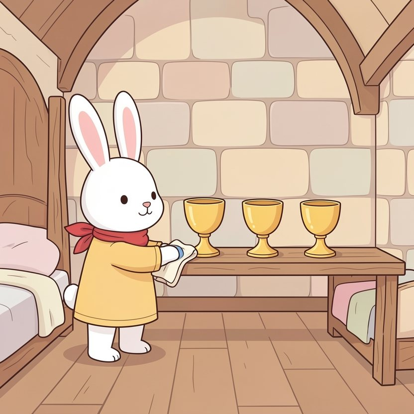

Titistoire › Les Étoiles (3-6 ans)
Rosie et la course des écuyers
Une histoire de Rosie la lapine pour parler de : savoir perdre.

▶ Écouter et regarder l'histoire
Gratuit, sans inscription : la voix lit, le texte suit mot à mot, les images tournent comme dans un album.
Le texte de l'histoire
Au château de Hauteroche, chaque année, a lieu la grande course des écuyers. Et chaque année, c'est Rosie qui gagne, haut la patte.
Trois coupes dorées trônent sur son étagère. Tous les soirs, à la chandelle, elle les astique pour qu'elles brillent. Elle a même mesuré la place de la quatrième.
« Gagner, c'est facile, explique-t-elle à qui veut l'entendre, le menton en l'air. Il suffit d'être moi. »
Cette année, pourtant, sur la ligne de départ, il y a un nouveau. C'est Pépin, le petit hérisson. Il a des pattes minuscules, des piquants en bataille, et il arrive à peine au genou de Rosie.
« Tu vas courir, toi ? » pouffe Rosie derrière sa patte. « Je vais essayer, répond bravement Pépin. Je me suis entraîné tout l'hiver. »
La reine Hermine lève son mouchoir blanc. Silence. « Un… deux… trois… PARTEZ ! »
Rosie jaillit comme une flèche. La voilà si loin devant qu'elle prend le temps de saluer la foule. Elle s'offre même une pirouette. « Regardez-moi ! »
Mais dans la grande descente, un drôle de bruit lui chatouille l'oreille. Frrrrrrr… Pépin s'est mis en boule. Et une boule, dans une descente, ça roule.
Frrrrrr-ZOUM ! La boule de piquants la dépasse, file sur le petit pont de pierre, et franchit la ligne d'arrivée la première. D'un tout petit nez.
« Vainqueur : Pépin ! » La foule éclate en bravos. On lui tend la coupe d'or, on porte le petit hérisson en triomphe. Enfin… on le porte avec des gants.
Rosie reste plantée sur la ligne, toute raide. Deuxième. Elle n'a jamais été deuxième, jamais. Ça lui fait comme un caillou dans la chaussure, mais partout.
« C'est de la triche ! tempête-t-elle. Rouler, ça ne compte pas ! L'herbe était mouillée ! J'avais le soleil dans l'œil ! » Elle trépigne si fort qu'elle se fait mal, et la voilà qui sautille sur une patte.
Pépin s'approche à petits pas, sa coupe serrée contre lui. Il tend sa patte minuscule. « Bravo, Rosie. Tu cours drôlement bien. Moi, j'ai eu de la chance dans la descente. »
Rosie regarde la petite patte tendue. Elle croise les bras. « Je ne serre pas la patte des tricheurs », lâche-t-elle. Et elle tourne les talons, le nez en l'air.
Derrière elle, Pépin reste seul avec sa coupe. Son sourire s'éteint, comme une bougie qu'on souffle.
Le soir, dans sa chambre, Rosie contemple ses trois coupes. Bizarre : elles lui semblent moins brillantes que d'habitude. La place de la quatrième est vide, le sommeil ne vient pas. Alors elle va coller son nez à la fenêtre.
En bas, dans la cour, tremblote une petite lumière. C'est Pépin, avec sa lanterne. Tout seul dans le noir, il court, il roule, bing ! il se cogne au puits, il se frotte la tête, il se relève, et il recommence.
« Tout l'hiver… », se souvient Rosie, son chiffon mou entre les pattes. Il s'est entraîné tout l'hiver. Pendant qu'elle, elle astiquait ses coupes.
Le lendemain matin, Rosie traverse la cour, les pattes lourdes comme des pierres. Ce chemin-là est plus dur que n'importe quelle course. Elle se penche vers le petit hérisson, la patte en avant. « Pépin… »
« Hier, tu n'as pas triché. Tu as gagné. Et moi… j'ai été une bien mauvaise perdante. » Penaude, les oreilles toutes basses, elle tend la patte. « Bravo. Pour de vrai. »
Pépin lui serre la patte. Aïe ! Ça picote un tout petit peu. « Tu m'apprends à rouler ? » demande Rosie en secouant les doigts. « Si tu m'apprends les virages ! glousse Pépin. Je me cogne partout. »
Tout le printemps, on les voit dévaler la colline ensemble. Rosie roule très mal : ses oreilles dépassent et battent comme des drapeaux. Pépin, lui, prend ses virages de mieux en mieux.
L'année suivante, qui a gagné la grande course ? Certains jurent que c'est Rosie. D'autres parient sur Pépin. À vrai dire, ils riaient si fort tous les deux en coupant le ruban que personne n'a bien regardé.
Sur l'étagère de Rosie, il y a toujours trois coupes. Et à la place de la quatrième, dans un petit cadre, un dessin. Une lapine et un hérisson, qui roulent dans l'herbe.